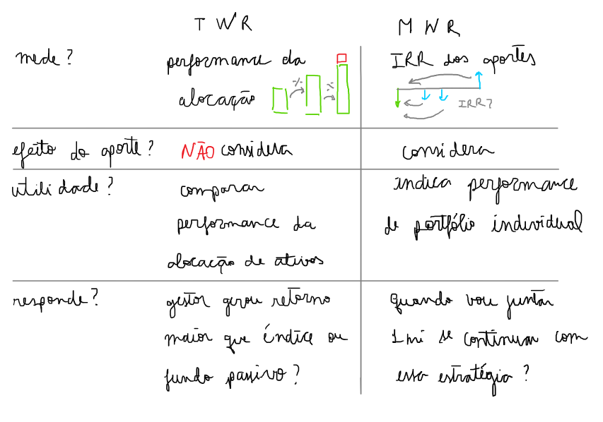

Performance de um portfolio
Introdução
E ai? quanto rendeu seu portfólio? Fácil, $$R_p = V_{final}/V_{inicial} - 1$$ certo? sim, se você investiu em um único aporte. Normalmente, as pessoas fazem vários aportes ao longo do tempo. Então, se você fez um aporte de 1.000,00, e depois fez outro aporte de 1.000,00; o valor final do seu portfólio é 2.000,00. Se usarmos a fórmula acima iremos obter 100% de retorno, isso indica "performance"?
Se em seu aporte, escolhesse outros tipos de ativos, teria o mesmo resultado? Com o retorno acima, não sabemos avaliar a escolha dos ativos. Esse retorno apenas mostra a evolução percentual da carteira em dois períodos. Não tem muita utilidade além de saber a taxa que seu patrimônio aumentou ou diminuiu. Não nos permite avaliar e tomar decisões financeiras, por exemplo, os ativos que escolheu foram adequados ou você precisa alterá-los?
Por sorte, existem outros métodos de avaliar retorno da carteira. Vou discutir um pouco sobre eles.
Métodos para avaliar retorno de um portfolio
Existem dois métodos utilizados para medir retorno de uma carteira. O primeiro é o time weighted rate of return (TWR) e o outro money weighted rate of return MWR.
O TWR mede o retorno entre cada período delimitado pelos aportes. Esse retorno corrige para distorções causada pelo aporte e mede apenas a performance real dos ativos alocados.
O MWR é a taxa interna de retorno TIR ou IRR 1 dos fluxos de caixa. A IRR é a taxa de desconto que leva todos os fluxos de caixa ao valor presente de forma que resultem no valor investido. Então ela mede um retorno igual para todos os aportes de forma a levar o investido ao valor final.
Exemplo
Implementação
Preliminares
import numpy as np
import pandas as pd
pd.options.display.float_format = '{:,.2f}'.format
import matplotlib
import matplotlib.pyplot as plt
matplotlib.style.use('ggplot')
import yahooquery as yfInput
trade_data = pd.read_csv('trade_data.csv')
print(trade_data)17/09/2018 Buy EGIE3 40 36,50 0 12/12/2018 Split EGIE3 10 0,00 1 15/03/2019 Sell EGIE3 25 39,00 2 25/03/2020 Buy EGIE3 15 38,00 3 25/03/2020 Buy EGIE3 10 37,50 4 27/07/2020 Buy EGIE3 32 44,70 5 03/10/2018 Buy ABEV3 28 18,26 6 16/10/2018 Buy ABEV3 30 17,29 7 07/11/2018 Buy ABEV3 25 16,80
Processar trades
def process_trades(trade_data_file):
trades = pd.read_csv(trade_data_file, sep=',',
names=['date', 'type',
'ticker', 'volume',
'price'],
decimal=',',
parse_dates=['date'], infer_datetime_format=True)
trades['total'] = trades.apply(lambda x: x.price * x.volume
if x.type in ['Buy', 'Split']
else - x.price * x.volume, axis=1)
trades['vol_adj'] = trades.apply(lambda x: x.volume
if x.type in ['Buy', 'Split']
else
(-x.volume if x.type in ['Sell'] else 0), axis=1)
return trades
trades = process_trades('trade_data.csv')
print(trades)
date type ticker volume price total vol_adj
0 2018-09-17 Buy EGIE3 40 36.50 1,460.00 40
1 2018-12-12 Split EGIE3 10 0.00 0.00 10
2 2019-03-15 Sell EGIE3 25 39.00 -975.00 -25
3 2020-03-25 Buy EGIE3 15 38.00 570.00 15
4 2020-03-25 Buy EGIE3 10 37.50 375.00 10
5 2020-07-27 Buy EGIE3 32 44.70 1,430.40 32
6 2018-10-03 Buy ABEV3 28 18.26 511.28 28
7 2018-10-16 Buy ABEV3 30 17.29 518.70 30
8 2018-11-07 Buy ABEV3 25 16.80 420.00 25
Consolidar portfolio
def consolidate_portfolio(trades):
portfolio = pd.DataFrame()
portfolio['vol_liq'] = (trades
.groupby('ticker')['vol_adj']
.sum())
portfolio['avg_price (R$)'] = (trades
.groupby('ticker')['total']
.sum() / portfolio.vol_liq)
portfolio = portfolio[portfolio.vol_liq != 0]
portfolio['quote (R$)'] = portfolio.apply(lambda x: yf.Ticker(x.name+'.SA').quotes[x.name+'.SA']['bid'], axis=1)
portfolio['p/l (%)'] = (portfolio['quote (R$)'] - portfolio['avg_price (R$)']) / portfolio['avg_price (R$)'] * 100
portfolio['current_value'] = portfolio['quote (R$)'] * portfolio['vol_liq']
portfolio['sector'] = portfolio.apply(lambda x: yf.Ticker(x.name+'.SA').asset_profile[x.name+'.SA']['sector'], axis=1)
return portfolio
portfolio = consolidate_portfolio(trades)
print(portfolio)
vol_liq avg_price (R$) quote (R$) p/l (%) current_value \
ticker
ABEV3 83 17.47 15.79 -9.61 1,310.57
EGIE3 82 34.88 44.71 28.17 3,666.22
sector
ticker
ABEV3 Consumer Defensive
EGIE3 Utilities
Retorno do portfolio
Para saber o valor total do portfolio na data anterior ao fluxo de caixa, precisamos saber:
-
posição líquida antes do fluxo de caixa
-
cotação de fechamento do dia anterior
def consolidate_partial_portfolio(trades, date):
portfolio = pd.DataFrame()
portfolio['vol_liq'] = (trades[trades.date < date]
.groupby('ticker')['vol_adj']
.sum())
portfolio = portfolio[portfolio.vol_liq != 0]
def get_quote(row):
quote = yf.Ticker(row.name+'.SA').history(
start=date + pd.DateOffset(-25), end=date)['close'].values
return quote[-1]
portfolio['quote'] = portfolio.apply(get_quote, axis=1)
portfolio['total'] = portfolio.vol_liq * portfolio.quote
return portfolio
def process_returns(trades):
r = []
for (row, cf) in trades.iterrows():
partial_portfolio = consolidate_partial_portfolio(trades, cf.date)
# initial investment
if partial_portfolio.total.sum() == 0:
r.append({'date': cf.date,
'ending_value': cf.total,
'cf_value': 0})
else:
r.append({'date': cf.date,
'ending_value': partial_portfolio.total.sum(),
'cf_value': cf.total})
print(cf.date, partial_portfolio.total.sum())
returns = pd.DataFrame(r)
returns = returns.sort_values('date')
returns = returns.groupby(['date', 'ending_value'], as_index=False)['cf_value'].sum()
def hold_period_return(row):
index = returns.index.get_loc(row.name)
if index == 0:
return 0
prev_row = returns.iloc[index - 1]
return row.ending_value / (prev_row.ending_value + prev_row.cf_value)
returns['hpr'] = returns.apply(hold_period_return, axis=1)
return returnsrr = pd.read_csv('returns.csv', parse_dates=['date'])
print(rr)
print(rr['hpr'].apply(lambda x: x + 1).prod())
date ending_value cf_value hpr
0 2018-09-17 1,460.00 0.00 0.00
1 2018-10-03 1,152.64 511.28 -0.21
2 2018-10-16 1,623.80 518.70 -0.02
3 2018-11-07 2,277.12 420.00 0.06
4 2018-12-12 2,722.89 0.00 0.01
5 2019-03-15 3,528.78 -975.00 0.30
6 2020-03-25 1,881.32 570.00 -0.26
7 2020-03-25 1,881.32 375.00 -0.23
8 2020-07-27 3,448.69 1,430.40 0.53
0.9258180510082121
2018-09-17 00:00:00
Unnamed: 0 date ending_value cf_value hpr 0 0 2018-09-17 1,460.00 0.00 0.00 1 6 2018-10-03 1,152.64 511.28 -0.21 2 7 2018-10-16 1,623.80 518.70 -0.02 3 8 2018-11-07 2,277.12 420.00 0.06 4 1 2018-12-12 2,722.89 0.00 0.01 5 2 2019-03-15 3,528.78 -975.00 0.30 6 3 2020-03-25 1,881.32 570.00 -0.26 7 4 2020-03-25 1,881.32 375.00 -0.23 8 5 2020-07-27 3,448.69 1,430.40 0.53 0.9258180510082121
Resultados
Referências
Footnotes
Internal rate of return